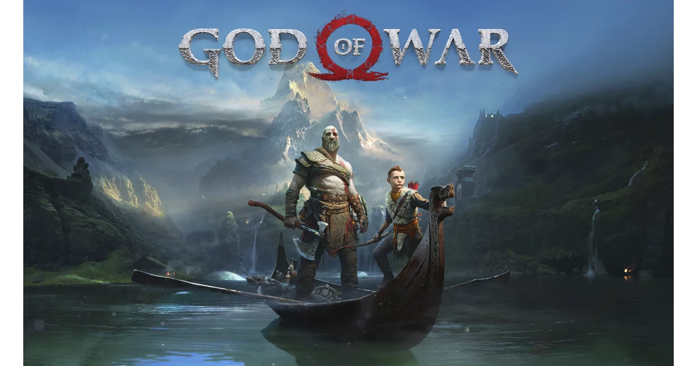
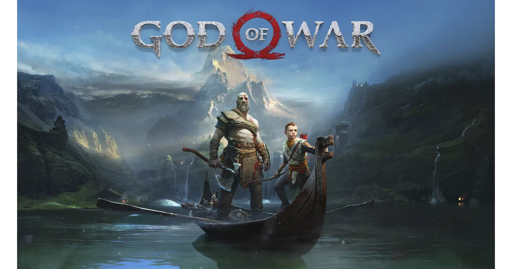

Skye Riley começa a experimentar eventos cada vez mais aterrorizantes e inexplicáveis. Sobrecarregada pelos horrores crescentes e pelas pressões da fama, ela precisa enfrentar seu passado sombrio para recuperar o controle de sua vida.
| Data de Lançamento: | 18 de outubro de 2024 |
| Diretor: | Parker Finn |
| Produtora: | Temple Hill Entertainment; Bad Feeling |
| Orçamento: | US$ 28 milhões |
| Produção: | Marty Bowen; Wyck Godfrey; Isaac Klausner; Parker Finn; Robert Salerno |
O Naruto pode ser um pouco duro às vezes Talvez você não saiba disso Mas o Naruto também cresceu sem pai Na verdade, ele nunca conheceu nenhum de seus pais E nunca teve nenhum amigo em nossa aldeia Mesmo assim, eu nunca vi ele chorar Ficar zangado ou se dar por vencido Ele está sempre disposto a melhorar Ele quer ser respeitado, é o sonho dele E o Naruto daria a vida por isso sem hesitar Meu palpite é que ele se cansou de chorar O Naruto pode ser um pouco duro às vezes Talvez você não saiba disso Mas o Naruto também cresceu sem pai Na verdade, ele nunca conheceu nenhum de seus pais E nunca teve nenhum amigo em nossa aldeia Mesmo assim, eu nunca vi ele chorar Ficar zangado ou se dar por vencido Ele está sempre disposto a melhorar Ele quer ser respeitado, é o sonho dele E o Naruto daria a vida por isso sem hesitar Meu palpite é que ele se cansou de chorar
 
